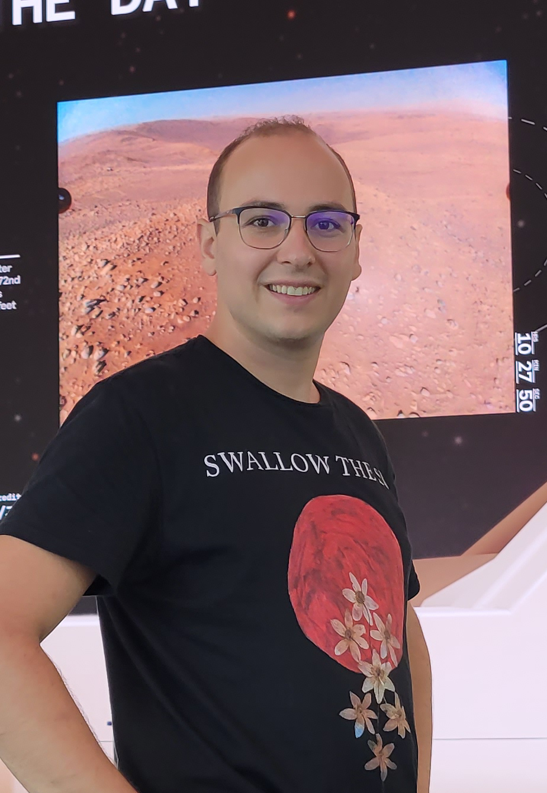

Hi! I'm Brice, from south west of France. I've been making games for 6 years and published my first mobile game, Super Long Boy, on Google Play in 2023.
I graduated with a Master's degree in Artificial Intelligence from Heriot Watt University and a Computer Engineering degree from CY Tech in 2017.
I love to expand my knowledge in game design and developement with every new project. I've learned many things while making my first mobile game and can't wait to take on new challenges with my next projects!